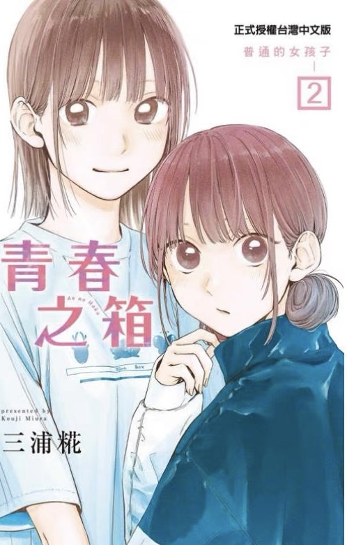
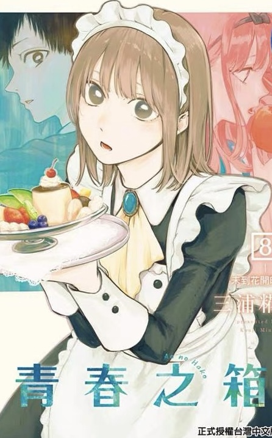
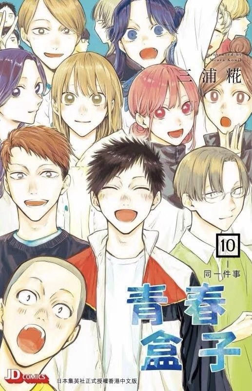
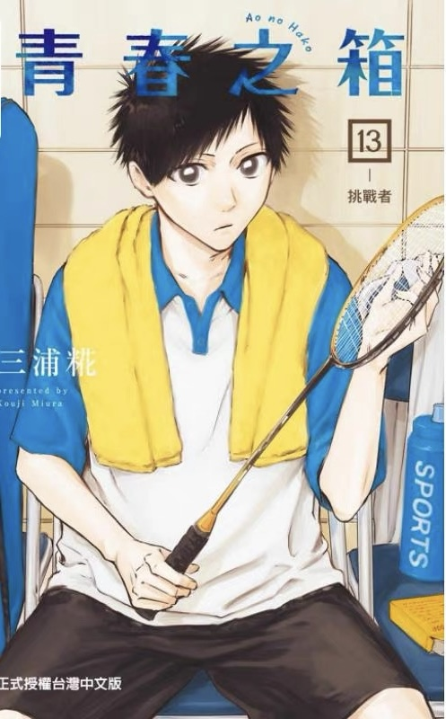
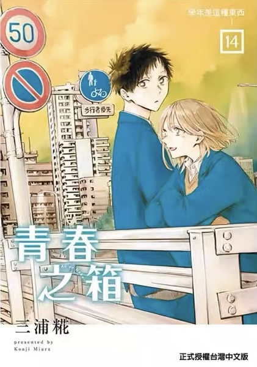

A STORY ON MY SHELF
青春之箱 第7卷（首限）
- 作者
- 三浦糀
- 出版社
- 东立
- 所属系列
- 青春之箱
- 入架时间
- 2026-11-15
- 购入价格
- ¥19.30
Alex 的一句话感想
还没有写下感想，留待读完后慢慢记录。
还没有写下感想，留待读完后慢慢记录。

青春之箱 第2卷（首刷）已读 · 台版
青春之箱 第8卷（首限）已读 · 台版青春之箱 第9卷（首限）已读 · 台版
青春之箱 第10卷（首限）已读 · 台版青春之箱 第11卷（首限）已读 · 台版
青春之箱 第13卷（首限）已读 · 台版
青春之箱 第14卷（首限）已读 · 台版